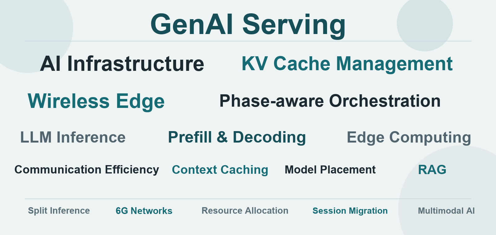

Tan Li
Assistant Professor
The Hang Seng University of Hong Kong
Hong Kong SAR
IEEE Global Communications Conference · Full-Day Workshop
Call for Papers
Generative AI is rapidly evolving from an experimental capability into an interactive, always-on service for mobile and edge users. As prompts become longer and richer and responses are delivered through streaming tokens, purely cloud-hosted serving increasingly struggles to provide consistent latency, reliability, and user experience over wireless links. This is accelerating a shift toward edge-based GenAI serving, where inference is deployed closer to end users. Moving GenAI to the edge, however, is not a simple replacement for cloud serving; it creates new challenges at the intersection of wireless communications, networking, edge computing, and AI system design. Large inputs and intermediate inference data must traverse time-varying wireless channels, so transmission delay and jitter directly affect the responsiveness of autoregressive generation. Efficient serving must also recognize that the prefill and decoding phases of large language model inference have fundamentally different computational characteristics. Treating them as a uniform workload can lead to poor placement and scheduling decisions, particularly when network conditions and user demand change over time. These difficulties are intensified by the limited memory, energy, and computing resources available at edge nodes, especially for long and stateful sessions. Addressing them requires networking, orchestration, and model execution to be designed as a coupled system rather than optimized in isolation. This workshop brings together researchers and practitioners from academia and industry to advance scalable, responsive, and resource-efficient GenAI serving at the wireless edge through new principles, architectures, algorithms, systems, and deployment experiences.

Invited Program
Speaker and talk details will be announced soon.
Research Areas
We welcome theoretical, algorithmic, systems, measurement, testbed, and deployment-oriented contributions, including but not limited to:
Organizing Team
Assistant Professor
The Hang Seng University of Hong Kong
Hong Kong SAR

Associate Professor
University of Virginia
USA

Associate Professor
Hong Kong University of Science and Technology
Hong Kong SAR

Associate Professor
Xiamen University
China

Associate Professor
City University of Hong Kong
Hong Kong SAR
Assistant Professor
University of Birmingham
UK

Chair Professor · IEEE Fellow
City University of Hong Kong
Hong Kong SAR

Professor · IEEE Fellow
Nanyang Technological University
Singapore

Professor · IEEE Fellow
Hong Kong University of Science and Technology
Hong Kong SAR
Submission
Submissions Due
Acceptance Notification
Camera-ready Paper Due
edas.info/N35322